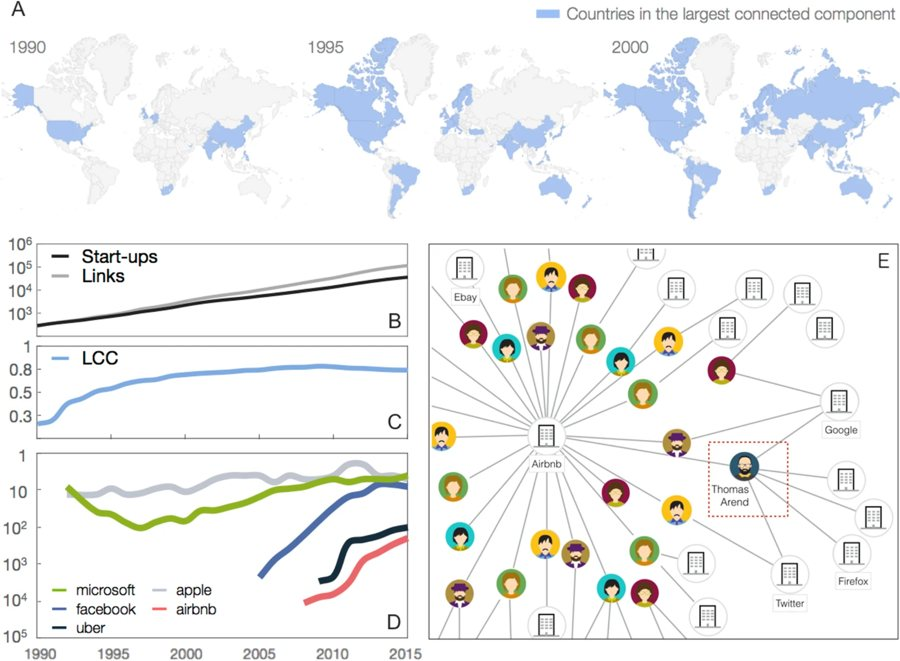
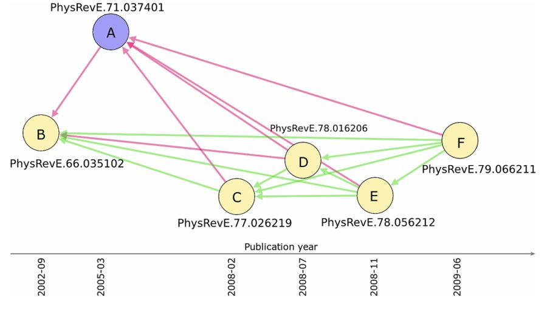
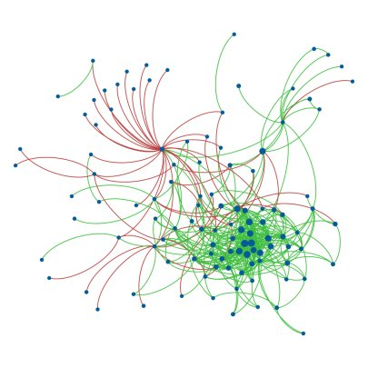

Research
Papers and talks
Networks of people, companies and citations, from my PhD at Queen Mary University of London onwards.

Scientific Reports, 2020Predicting success in the worldwide start-up network PhD thesis, Queen Mary University of London, 2018Positive and negative connections and homophily in complex networks
PhD thesis, Queen Mary University of London, 2018Positive and negative connections and homophily in complex networks

EPJ Data Science, 2016Homophily and missing links in citation networks
Physica A, 2015Degree correlations in signed social networks